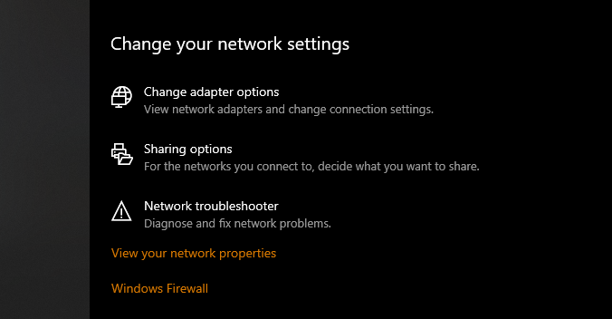
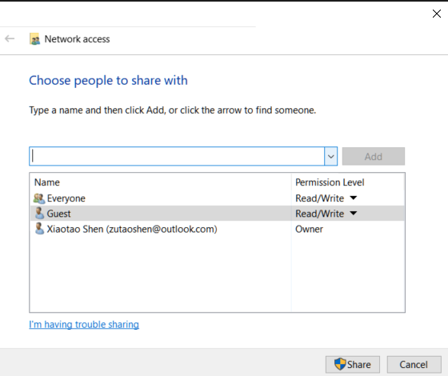
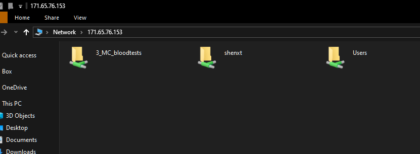

1 如何在两台电脑间共享文件夹?
参考帖子:
https://jingyan.baidu.com/article/93f9803f3e9788e0e46f55c8.html
保证两台电脑在同一个网络中.对于Stanford来说,如果在其他地方,需要连接VPN.
在workstation(电脑B)上打开网络设置.
- 选择
Sharing options

Private按照下面进行设置.
All network按照下面设置

- 选择要共享的文件夹,然后右键打开属性.然后选择
Share.
- 选择
Everyone,然后点击Share.

8.然后再点击第6步中的Advanced Sharing.按照下图设置.
9.快捷键win + R打开run.然后输入B电脑的IPV4地址.然后需要登录,注意,使用的是你在B电脑上的账号和密码登录,有时候注意登录名前需要添加win\
- 最终效果如下图.
